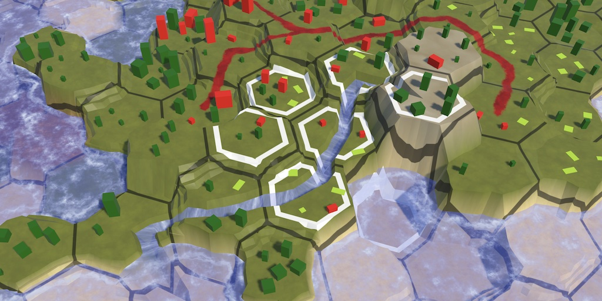
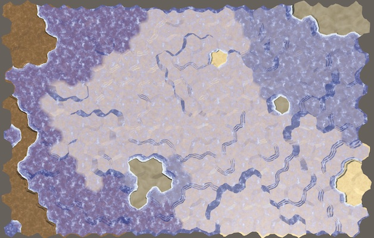
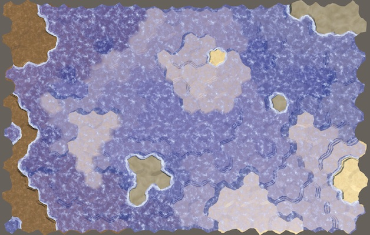
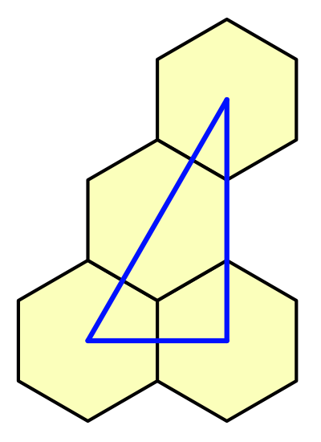
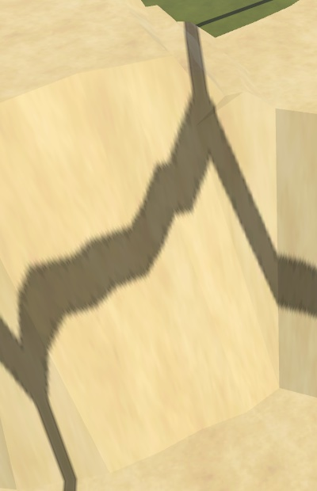
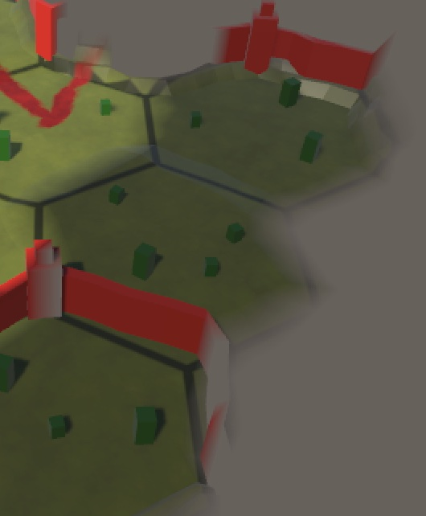
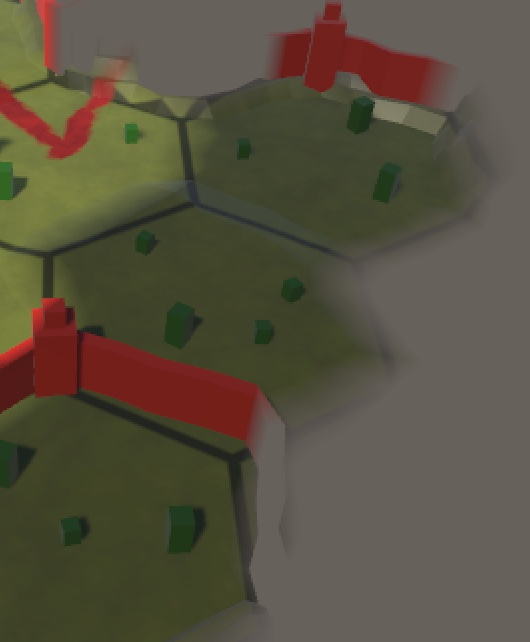
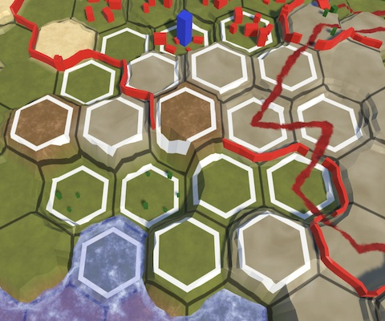

Hex Map 2.2.0
Cell Visuals Upgrade
- Colorize cell based on submergence.
- Analytically derive cells data in shaders.
- Highlight cells while editing.

This tutorial is made with Unity 2021.3.20.f1 and follows Hex Map 2.1.0.
Shader Data
The visibility changes of cells are animated, so the fog-of-war effect adjusts smoothly. We stored whether a cell is transitioning in the B channel of the vertex data that we send to the shader. This data isn't needed in the shader, but because it was unused we stored it there. But now we're going to use that channel for something else, so we need to change our approach.
Visibility Transitions
Add a boolean array to HexCellShaderData to track the visibility transitions and initialize it in the Initialize method.
bool[] visibilityTransitions;
…
public void Initialize (int x, int z) {
…
if (cellTextureData == null || cellTextureData.Length != x * z) {
cellTextureData = new Color32[x * z];
visibilityTransitions = new bool[x * z];
}
else {
for (int i = 0; i < cellTextureData.Length; i++) {
cellTextureData[i] = new Color32(0, 0, 0, 0);
visibilityTransitions[i] = false;
}
}
transitioningCells.Clear();
enabled = true;
}
Make RefreshVisiblity use that array instead of checking and setting the B channel to 255. Make UpdateCell use the array as well.
public void RefreshVisibility (HexCell cell) {
…
//else if (cellTextureData[index].b != 255) {
// cellTextureData[index].b = 255;
else if (!visibilityTransitions[index]) {
visibilityTransitions[index] = true;
transitioningCells.Add(cell);
}
enabled = true;
}
…
bool UpdateCellData (HexCell cell, int delta) {
…
if (!stillUpdating) {
//data.b = 0;
visibilityTransitions[index] = false;
}
cellTextureData[index] = data;
return stillUpdating;
}
There is also a SetMapData method, which is currently unused but was and can be used to send debug data to the shader. It was limited 254 because of the transition indication, but can now use the full by range.
data < 0f ? (byte)0 : (data < 1f ? (byte)(data * 255f) : (byte)255);
Water Surface
Now that we have the B channel available we'll use it to send the water height of cells to the shader. Make RefreshTerrain set it. If the cell is underwater then grab its WaterSurfaceY and store it in the B channel so it can support a water level up to 30 units high. If the cell is not underwater then set it to zero.
Supports water surfaces up to 30 units high.
public void RefreshTerrain (HexCell cell) {
//cellTextureData[cell.Index] = (byte)cell.TerrainTypeIndex;
Color32 data = cellTextureData[cell.Index];
data.b = cell.IsUnderwater ? (byte)(cell.WaterSurfaceY * (255f / 30f)) : (byte)0;
data.a = (byte)cell.TerrainTypeIndex;
cellTextureData[cell.Index] = data;
enabled = true;
}
We also need to update this data when the view elevation of a cells is changed, so give ViewElevationChanged a cell parameter and also set the water level there.
public void ViewElevationChanged (HexCell cell) {
cellTextureData[cell.Index].b = cell.IsUnderwater ?
(byte)(cell.WaterSurfaceY * (255f / 30f)) : (byte)0;
needsVisibilityReset = true;
enabled = true;
}
Adjust the Elevation and WaterLevel properties of HexCell so they provide the new argument. Also, simply always invoke ViewElevationChanged instead of checking whether there was a change to make sure that the water level is always set correctly.
public int Elevation {
get => elevation;
set {
…
//if (ViewElevation != originalViewElevation) {
// ShaderData.ViewElevationChanged();
//}
ShaderData.ViewElevationChanged(this);
…
}
}
public int WaterLevel {
get => waterLevel;
set {
…
//if (ViewElevation != originalViewElevation) {
// ShaderData.ViewElevationChanged();
//}
ShaderData.ViewElevationChanged(this);
…
}
}
We should now also delay invoking RefreshTerrain until all required cell data has been retrieved in Load, so let's move it to the end of the method.
public void Load (BinaryReader reader, int header) {
terrainTypeIndex = reader.ReadByte();
//ShaderData.RefreshTerrain(this);
…
IsExplored = header >= 3 ? reader.ReadBoolean() : false;
ShaderData.RefreshTerrain(this);
ShaderData.RefreshVisibility(this);
}
Submergence Visualized
We can now used the cell's water surface level to colorize it based on its submergence, to add more visual depth to underwater areas. We need to make some changes to the Terrain HLSL code to do this. First, we have to pass the water data to the fragment program via a custom interpolator. We use the existing Terrain output of GetVertexCellData_float for this, changing it to a 4D vector, filling its W component with the highest water level of the retrieved cells, scaled up to cover the 30-unit range.
void GetVertexCellData_float (
…
out float4 Terrain,
…
) {
…
Terrain.z = cell2.w;
Terrain.w = max(max(cell0.b, cell1.b), cell2.b) * 30.0;
…
}
Create a ColorizeSubmergence function that applies a blue color filter to a base color. It also needs to know the surface and water Y coordinates for that. Apply the filter (0.25, 0.25, 0.75) to the color and fade it in based on submergence depth, over a 15-unit range.
float3 ColorizeSubmergence (float3 baseColor, float surfaceY, float waterY) {
float submergence = waterY - max(surfaceY, 0);
float3 colorFilter = float3(0.25, 0.25, 0.75);
float filterRange = 1.0 / 15.0;
return baseColor * lerp(1.0, colorFilter, saturate(submergence * filterRange));
}
Use that function to adjust the base color after retrieving the cell color, based on the new terrain data.
void GetFragmentData_float (
…
float4 Terrain,
…
) {
float4 c = …;
BaseColor = ColorizeSubmergence(c.rgb, WorldPosition.y, Terrain.w);
…
//BaseColor = c.rgb * grid.rgb;
BaseColor *= grid.rgb;
Exploration = Visibility.w;
}
Change GetTerrainColor so it can keep working with the terrain as a 4D vector. I also renamed its Color€ parameter to Weights to make its use clearer.
float4 GetTerrainColor (
…
float4 Terrain,
float3 Weights,
…
) {
…
return c * (Weights[index] * Visibility[index]);
}
To make this work adjust the Terrain shader graph to use a 4D vector for the custom Terrain interpolator.


Analytical Grid
Up to this point we have used a texture to project the hex grid on the map. A downside of this approach is that it doesn't look good when the texture gets stretched vertically, when the gridlines are projected on cliffs or terraces. So we are going to replace our texture-based grid with an analytical grid that the shader generates based on the world position of the fragment.
Hex Space
We begin by introducing the concept of hex space. This is the same as the world space XZ plane, but scaled such that the distance between cell centers of east-west neighbors is one unit. We can convert from world to hex space via a division by twice the outer hex radius scaled by the outer-to-inner radius factor. Add a function for this conversion named WorldToHexSpace to HexMetrics.hlsl.
float2 WoldToHexSpace (float2 p) {
return p * (1.0 / (2.0 * OUTER_RADIUS * OUTER_TO_INNER));
}
Include the metrics at the top of HexCellData.hlsl.
#include "HexMetrics.hlsl"
To prevent duplicate inclusion remove the explicit metrics inclusion from Terrain.hlsl and Water.hlsl.
//#include "HexMetrics.hlsl"
Then move the inclusion of water until after the hex cell data in CustomFunctions.hlsl.
//#include "Water.hlsl"#include "HexCellData.hlsl" #include "Water.hlsl"
Hex Grid Data
To make working with hex grid data convenient add a HexGridData struct type to HexCellData.hlsl. Give it a cell center, cell offset coordinates—which will be approximate but good enough for sampling the cell data—cell UV coordinates for potential future use, the hex distance from cell edge to center, and a distance smoothing value used for smoothing lines.
float4 GetCellData (float2 cellDataCoordinates, bool editMode) { … }
struct HexGridData {
// Cell center in hex space.
float2 cellCenter;
// Approximate cell offset coordinates. Good enough for point-filtered sampling.
float2 cellOffsetCoordinates;
// For potential future use. U covers entire cell, V wraps a bit.
float2 cellUV;
// Hexagonal distance to cell center, 0 at center, 1 at edges.
float distanceToCenter;
// Smoothstep smoothing for cell center distance transitions.
// Based on screen-space derivatives.
float distanceSmoothing;
};
To create anti-aliased lines based on this data we introduce three smoothstep functions, which we add as members to HexGridData. The first is Smoothstep01. It has a threshold parameter that it uses to step from 0 to 1 based on the hex distance to center, smoothed by the distance smoothing range in both directions. The second is Smoothstep10 which does the same but in the other direction. The third is SmoothstepRange which steps from 0 to 1 and back to 0 given an inner and outer threshold.
struct HexGridData {
…
// Smoothstep from 0 to 1 at cell center distance threshold.
float Smoothstep01 (float threshold) {
return smoothstep(
threshold - distanceSmoothing,
threshold + distanceSmoothing,
distanceToCenter
);
}
// Smoothstep from 1 to 0 at cell center distance threshold.
float Smoothstep10 (float threshold) {
return smoothstep(
threshold + distanceSmoothing,
threshold - distanceSmoothing,
distanceToCenter
);
}
// Smoothstep from 0 to 1 inside cell center distance range.
float SmoothstepRange (float innerThreshold, float outerThreshold) {
return Smoothstep01(innerThreshold) * Smoothstep10(outerThreshold);
}
};
From Position to Cell
To find the grid data we need to know the hexagonal distance from its center to its closest edge. Create an HexagonalCenterToEdgeDistance function for this that converts a position in hex space to this distance, assuming that the cell's center is at the origin. As hexagons are symmetrical in both dimension we can reduce the problem space to only the positive quadrant by taking the absolute of the given position. Then we find the distance to its angled edge by taking the dot product of the position and the normalized hex angled edge vector. This vector points in the NE direction and is (1, √3) to reach the neighbor two steps away.

To also take the vertical edge into account take the maximum of the result and the X coordinate. As this is in hex space the maximum distance from center to edge is ½, so we double it to get the desired 0–1 range.
#define HEX_ANGLED_EDGE_VECTOR float2(1, sqrt(3))
// Calculate hexagonal center-edge distance for point relative to center in hex space.
// 0 at cell center and 1 at edges.
float HexagonalCenterToEdgeDistance (float2 p) {
// Reduce problem to one quadrant.
p = abs(p);
// Calculate distance to angled edge.
float d = dot(p, normalize(HEX_ANGLED_EDGE_VECTOR));
// Incorporate distance to vertical edge.
d = max(d, p.x);
// Double to increase range from center to edge to 0-1.
return 2 * d;
}
To find the nearest cell center to a point in hex space we add a HexModulo function. It does this by subtracting the hex angled edge vector scaled by the floor of the position divided by the same vector.
// Calculate hex-based modulo to find position vector.
float2 HexModulo (float2 p) {
return p - HEX_ANGLED_EDGE_VECTOR * floor(p / HEX_ANGLED_EDGE_VECTOR);
}
To get the final hex grid data introduce a GetHexGridData function with a world XZ position parameter, which it converts to hex space. Then there are two candidates for the closest cell position. The first is found by taking the hex modulo of the position. The second is found the same way, except that it is offset by one cell diagonally by subtracting half the hex angled edge vector before taking the modulo. Then the same offset is subtracted from both to align them with our grid. These are vectors from the cell centers to the hex position. Whichever is smallest is the one we need.
// Get hex grid data analytically derived from world-space XZ position.
HexGridData GetHexGridData (float2 worldPositionXZ) {
float2 p = WoldToHexSpace(worldPositionXZ);
// Vectors from nearest two cell centers to position.
float2 gridOffset = HEX_ANGLED_EDGE_VECTOR * 0.5;
float2 a€ = HexModulo(p) - gridOffset;
float2 b€ = HexModulo(p - gridOffset) - gridOffset;
bool aIsNearest = dot(a€, a€) < dot(b€, b€);
float2 vectorFromCenterToPosition = aIsNearest ? a€ : b€;
HexGridData d;
return d;
}
Now we can fill the grid data. The cell center is found by subtracting the vector that we found from the hex position.
The cell offset X coordinate is the cell center X, offset by −½ if the first cell candidate ended up being closest, so it matches the zigzag offset of the rows. The cell offset Y coordinate is the cell center Y divided by the outer-to-inner radius factor. These offset coordinates are not exact, but good enough for our purposes.
The cell UV coordinates are the same as the found vector, plus ½ to align it with the cell center. We currently don't use this but could be used to texture the cells.
The distance to center is found by passing the vector through HexagonalCenterToEdgeDistance.
For the distance smoothing we use the fwidth of the distance to center to make the transition roughly two pixels wide.
HexGridData d; d.cellCenter = p - vectorFromCenterToPosition; d.cellOffsetCoordinates.x = d.cellCenter.x - (aIsNearest ? 0.5 : 0.0); d.cellOffsetCoordinates.y = d.cellCenter.y / OUTER_TO_INNER; d.cellUV = vectorFromCenterToPosition + 0.5; d.distanceToCenter = HexagonalCenterToEdgeDistance(vectorFromCenterToPosition); d.distanceSmoothing = fwidth(d.distanceToCenter); return d;
Sharp Grid Lines
To create sharp analytical grid lines add an ApplyGrid function to Terrain.hlsl with parameters for a base color and hex grid data. Reduce the color to 20% by using SmoothStep10 with 0.965 as the threshold.
// Apply an 80% darkening grid outline at hex center distance 0.965-1.
float3 ApplyGrid (float3 baseColor, HexGridData h) {
return baseColor * (0.2 + 0.8 * h.Smoothstep10(0.965));
}
Remove the GridTexture parameter from GetFragmentData_float and make it use the new function to show the grid.
void GetFragmentData_float ( …//UnityTexture2D GridTexture,… ) { …//float4 grid = 1;HexGridData hgd = GetHexGridData(WorldPosition.xz); if (ShowGrid) {//float2 gridUV = WorldPosition.xz;//gridUV.x *= 1 / (4 * 8.66025404);//gridUV.y *= 1 / (2 * 15.0);//grid = GridTexture.Sample(GridTexture.samplerstate, gridUV);BaseColor = ApplyGrid(BaseColor, hgd); } …//BaseColor *= grid.rgb;Exploration = Visibility.w; }
Also remove the texture from the Terrain shader graph and delete the Grid texture asset.

Feature Visibility
We can also use the new hex grid data in the vertex function of Feature.hlsl to find the cell offset coordinates, removing its GridCoordinatesTexture parameter.
void GetVertexCellData_float (//UnityTexture2D GridCoordinatesTexture,… ) {//float2 gridUV = WorldPosition.xz;//gridUV.x *= 1 / (4 * 8.66025404);//gridUV.y *= 1 / (2 * 15.0);//float2 cellDataCoordinates = floor(gridUV.xy) + GridCoordinatesTexture.SampleLevel(// GridCoordinatesTexture.samplerstate, gridUV, 0//).rg;//cellDataCoordinates *= 2;HexGridData hgd = GetHexGridData(WorldPosition.xz); float4 cellData = GetCellData(hgd.cellOffsetCoordinates, EditMode); … }
Also remove the texture from the Feature shader graph and delete the Grid Coordinates texture asset. Besides no longer needing the texture this also fixes some visibility artifacts caused by incorrect offset interpretations very close to some cell edges.


Highlighting Cells
The hex cell data allows us to create other effects in the shader as well. Let's use it to highlight affected cells when editing the map.
Cell Highlighting Data
To know which cells are affected we have to send some highlighting data to the GPU. At minimum we'll need the brush center XZ coordinates in hex space. Add properties to retrieve these coordinates to HexCoordinates.
public float HexX => X + Z / 2 + ((Z & 1) == 0 ? 0f : 0.5f); public float HexZ => Z * HexMetrics.outerToInner;
We'll make HexMapEditor communicate the highlighing data to the shader by setting a global 4D vector shader property named _CellHighlighting. Its XY components contain the hex coordinates, its Z component contains the squared brush size plus ½, and its W component contains the wrap size, in case a wrapping map is used. Set this data in a new UpdateCellHighlightData method with a cell parameter. If the cell is null instead clear the data, via a separate ClearCellHighlightData method that set the vector to (0, 0, −1, 0).
static int cellHighlightingId = Shader.PropertyToID("_CellHighlighting");
…
void UpdateCellHighlightData (HexCell cell) {
if (cell == null) {
ClearCellHighlightData();
return;
}
// Works up to brush size 6.
Shader.SetGlobalVector(
cellHighlightingId,
new Vector4(
cell.Coordinates.HexX,
cell.Coordinates.HexZ,
brushSize * brushSize + 0.5f,
HexMetrics.wrapSize
)
);
}
void ClearCellHighlightData () =>
Shader.SetGlobalVector(cellHighlightingId, new Vector4(0f, 0f, -1f, 0f));
In Update, if the cursor is not claimed by the UI and the primary mouse button isn't pressed, invoke UpdateCellHighlightingData with the cell currently under the cursor. If the cursor is claimed by the UI invoke ClearHighlightData. Also invoke UpdateCellHighlightData with the current cell at the end of HandleInput.
void Update () {
if (!EventSystem.current.IsPointerOverGameObject()) {
if (Input.GetMouseButton(0)) {
HandleInput();
return;
}
else {
// Potential optimization: only do this if camera or cursor has changed.
UpdateCellHighlightData(GetCellUnderCursor());
}
…
}
else {
ClearCellHighlightData();
}
previousCell = null;
}
…
void HandleInput () {
…
UpdateCellHighlightData(currentCell);
}
Showing Highlighted Cells
To check whether a cell is highlighted in the shader add an IsHighlighted function to HexGridData in HexCellData.hlsl. The relative positive-quadrant position of the cell to highlight is found by taking the absolute of the highlighting hex coordinates minus the cell center.
Then in case world wrapping is enabled check whether the X position exceeds half the wrap size and if so wrap once. We can do this also when wrapping is disabled because in that case the wrap size is zero.
The cell should be highlighted if the square magnitude of the relative position vector is less than the highlighting Z component, which is the squared edit radius plus ½. This simple circular threshold check works up to brush size 6. This is acceptable because our largest brush size is only 4.
// Is highlighed if square distance from cell to highlight center is below threshold.
// Works up to brush size 6.
bool IsHighlighted () {
float2 cellToHighlight = abs(_CellHighlighting.xy - cellCenter);
// Adjust for world X wrapping if needed.
if (cellToHighlight.x > _CellHighlighting.w * 0.5) {
cellToHighlight.x -= _CellHighlighting.w;
}
return dot(cellToHighlight, cellToHighlight) < _CellHighlighting.z;
}
We apply the highlight in Terrain.hlsl by adding a new ApplyHighlight function with parameters for a base color and hex grid data. The highlight is made by drawing a white hexagon outline by using SmoothstepRange with thresholds 0.68 and 0.8.
// Apply a white outline at hex center distance 0.68-0.8.
float3 ApplyHighlight (float3 baseColor, HexGridData h) {
return saturate(h.SmoothstepRange(0.68, 0.8) + baseColor.rgb);
}
Apply the highlight if needed after showing the grid in GetFragmentData_float.
if (ShowGrid) {
BaseColor = ApplyGrid(BaseColor, hgd);
}
if (hgd.IsHighlighted()) {
BaseColor = ApplyHighlight(BaseColor, hgd);
}

The next tutorial is Hex Map 2.3.0.